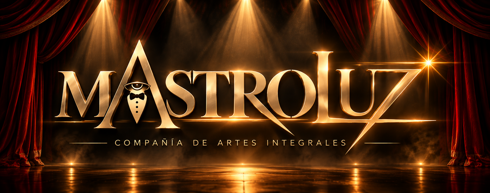
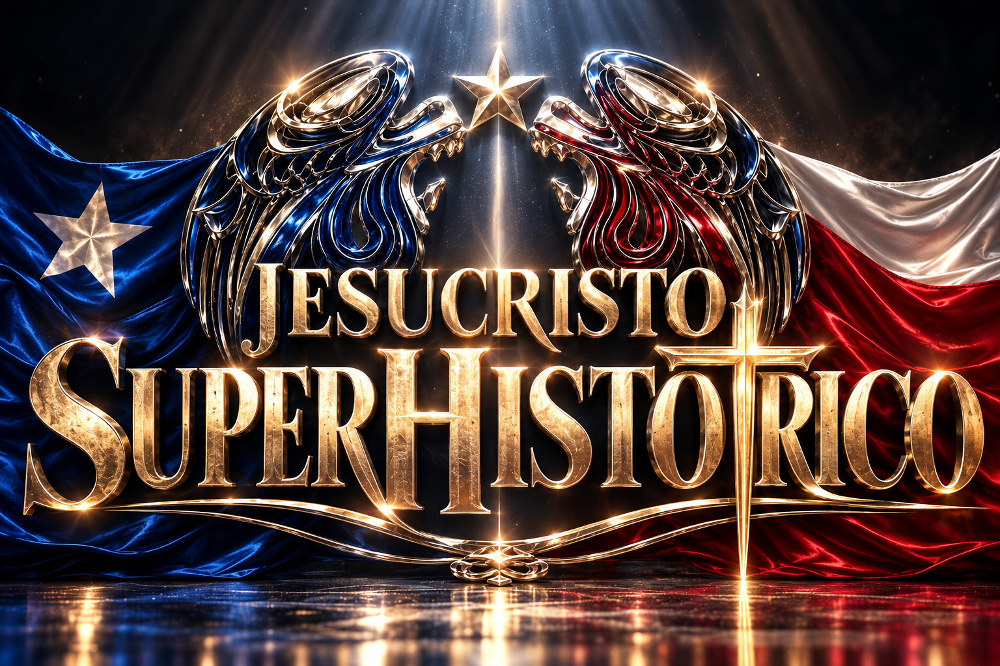

El conflicto humano
Los vínculos, deseos y temores de los personajes sostienen el trabajo interpretativo de esta puesta.


Compañía Mastroluz presenta
Una propuesta de teatro musical que conecta interpretación, música en vivo y una mirada contemporánea sobre el poder y la imagen pública.
Montaje en desarrollo · Chile 2027La propuesta artística
Jesucristo Superhistórico propone una experiencia escénica que reúne actuación, voces, músicos en vivo, danza y un universo visual propio.
En un mundo atravesado por las pantallas, la popularidad y la construcción de imágenes públicas, el montaje explora las tensiones entre el mensaje y el espectáculo, la convicción y el poder.
Los vínculos, deseos y temores de los personajes sostienen el trabajo interpretativo de esta puesta.
Voces y músicos en vivo forman parte esencial de la experiencia que propone el proyecto.
Vestuario, escenografía y lenguaje audiovisual construyen una lectura conectada con nuestro tiempo.
Programación y eventos
Conversaciones para galas, celebraciones y eventos corporativos, evaluando formato y condiciones de producción.
Una propuesta para evaluar dentro de la programación artística y cultural de comunas y territorios.
Coordinación artística, comercial y técnica para estudiar futuras presentaciones.
Las personas detrás del proyecto
El proyecto cuenta con intérpretes que ya han abordado sus personajes en otros montajes. Esta puesta propone un nuevo proceso de creación, con una dirección y una identidad visual propias.
Actor y gestor cultural. A cargo de la dirección del montaje y de la articulación de su propuesta interpretativa y visual.
El trabajo reúne las áreas de actuación, música, movimiento y realización escénica alrededor de una visión común.
Escenografía · Vestuario · Identidad
La propuesta visual sitúa la historia en un entorno hipertecnologizado, donde la exposición pública, el consumo de imágenes y las relaciones de poder atraviesan la acción.
Nuestra gráfica de concierto
La identidad gráfica reúne elementos que dialogan con el imaginario del proyecto y su mirada chilena.
Diseño escénico
El diseño en desarrollo explora estructuras a distintos niveles, módulos transformables y una presencia audiovisual integrada a la narración.
La configuración final se definirá junto con las condiciones de producción y las características del recinto.
Vestuario y personajes
El vestuario construye identidades y relaciones de poder. Sus contrastes acompañan la lectura contemporánea y el recorrido dramático de cada personaje.
Las imágenes de diseño se presentarán como propuestas artísticas en desarrollo.
Opciones de presentación
La propuesta principal es el espectáculo teatral completo. Las alternativas requieren definir su alcance artístico y sus condiciones de producción.
La experiencia teatral concebida para integrar interpretación, música en vivo, coreografía, vestuario, escenografía y lenguaje audiovisual.
Alternativa con foco musical. Repertorio, duración, dotación y necesidades técnicas se precisarán en la propuesta correspondiente.
Posibles intervenciones para eventos y presentaciones, con contenido y disponibilidad acordados previamente.
Coordinación de producción
Los requerimientos definitivos están en desarrollo. La evaluación técnica dependerá del formato solicitado y del recinto.
Programación · Eventos · Contratación
Estamos desarrollando el montaje 2027 y abriendo conversaciones con empresas, municipios, teatros y productoras para su contratación anticipada.
Organización, ciudad, fecha tentativa, tipo de evento y público estimado.
Revisamos formato, características del recinto y necesidades de producción.
Precisamos inclusiones, plazos, responsabilidades y presupuesto.
Compañía Mastroluz
Canales oficiales de contratación pendientes de incorporación.